Персонажная анимация
Персонаж появляется там, где зритель начинает видеть в движении намерение. Круг может просто переместиться к кнопке, а может заметить её, насторожиться, попробовать нажать и испугаться результата. Геометрия почти не изменилась, но возникли внимание, решение и характер. Персонажная анимация работает с этим различием.
Героем бывает человек, животное, маскот, буква, предмет или абстрактная форма. Для моушн-дизайнера это способ объяснить действие продукта, построить маленькую историю и придать бренду узнаваемое поведение. Красивый рисунок помогает, но сам по себе не заставляет верить в живое существо. Важнее понять, чего герой хочет, на что опирается, что замечает и как меняет решение.
В коротком фильме Simon’s Cat «Let Me In!» задача понятна без диалога: кот хочет попасть внутрь. Посмотрите, как попытки становятся настойчивее, как меняются позы и сколько выразительности дают ожидание и реакция. Дальше будем разбирать именно такие связи между действием и его смыслом.
Намерение и актёрская задача
Начинать удобнее с глагола. «Милый персонаж стоит рядом с коробкой» описывает внешний вид. «Персонаж пытается незаметно открыть коробку» уже задаёт действие. Появляются причина смотреть по сторонам, осторожный перенос веса, медленное приближение руки и возможность резко замереть. Одна и та же коробка даст совершенно другую сцену, если герой спешит, боится содержимого или уверен, что это подарок.
Цель, препятствие и отношение помогают выбирать движение. Цель отвечает на вопрос, чего герой добивается прямо сейчас. Препятствием может стать вес предмета, закрытая дверь, другой герой или собственная нерешительность. Отношение определяет способ действия: герой раздражён, бережен, любопытен, самоуверен. Отношение не обязательно называть зрителю. Оно должно обнаружиться в том, как именно выполняется задача.
Эти части называют смысловыми тактами, или beats. Они не обязаны занимать одинаковое время. Небольшая пауза перед попыткой может рассказать больше, чем длинный жест. Если все части проходят с одной скоростью, внимание зрителя не успевает отделить решение от результата. Если после каждого движения вставлять одинаковую паузу, сцена начинает дробиться на механические команды.
Для короткого брендового ролика достаточно одного изменения. Маскот уверенно подходит к тяжёлой кнопке, с первой попытки не справляется, меняет опору и нажимает всем телом. Маленькая история держится на разнице между ожиданием и усилием. Усложнять её несколькими эмоциями, сменой локаций и длинным диалогом необязательно.
Видеореференс нужен для наблюдения. Полезно самому сыграть действие несколькими способами и снять его в полный рост. Смотрите, когда начинается перенос веса, куда раньше направляются глаза и как тело тормозит. Не копируйте запись автоматически: реальный жест может оказаться слишком мелким для вашего кадра. Выберите существенное, сделайте понятнее силуэт и при необходимости измените длительность. Запись объясняет механику, а постановочное решение остаётся за аниматором.
В сцене с двумя персонажами важен и тот, кто слушает. Если второй герой безучастно стоит до своей реплики, взаимодействие исчезает. Он может следить за рукой партнёра, отступить от слишком близкого предмета или понять шутку позже зрителя. Реакция должна иметь причину, иначе постоянное моргание и покачивание становятся случайным фоном.
Поза, силуэт и конструкция
Поза сообщает состояние до того, как начнётся движение. В ней читаются направление внимания, распределение веса и отношение к происходящему. Уверенность не сводится к поднятому подбородку, а испуг к большим глазам. Положение таза, грудной клетки, стоп, рук и головы должно поддерживать общее действие.
Линия действия связывает главные массы в одно движение. Это условная направляющая, а не видимый позвоночник. У тянущегося героя она может вести от опорной стопы к руке, у закрывающегося от удара собирать корпус внутрь. На стадии маленького эскиза часто достаточно этой линии, головы и таза. Детали одежды ещё не нужны.

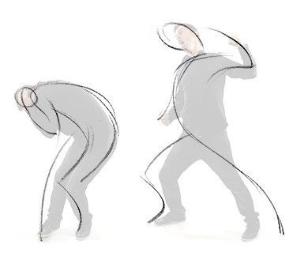
Силуэт позволяет проверить, видны ли действие и важный предмет без внутренних линий. Кисть, слившаяся с корпусом, может скрыть жест. Две руки на одной высоте и с одинаковым изгибом часто делают позу условной. Небольшой поворот плеч, разная высота локтей и понятные просветы между формами помогают отделить части. Но асимметрия нужна по задаче: фронтальный симметричный жест тоже бывает точным решением.
Вернитесь к рисунку выше и прикройте взглядом внутренние линии. Найдите просветы между руками и корпусом и сравните, какие жесты остаются читаемыми по внешнему контуру.
Контрапост и баланс. Если вес находится преимущественно на одной ноге, положение таза и грудной клетки обычно различается. Тело компенсирует нагрузку. Для стилизованного героя эта связь может быть сильно упрощена, но она помогает избежать ощущения, что корпус висит отдельно от ног. Поза с широко разведёнными стопами может быть устойчивой, однако устойчивость определяется не одной шириной, а расположением общей массы относительно опоры.

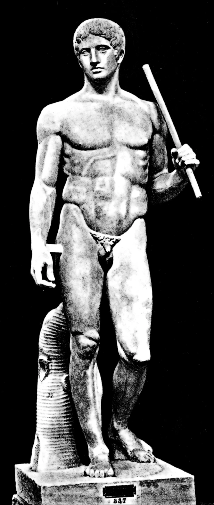

Конструкция нужна и в плоском рисунке. Голова имеет объём, глаза находятся на поверхности, дальняя рука при повороте меняет видимую длину. Отмечайте оси головы и грудной клетки, следите за перекрытиями. Иначе при повороте черты лица начинают скользить независимо, а конечности случайно удлиняются. Сохранение конструкции не запрещает деформацию: вы сознательно меняете форму ради движения и возвращаетесь к выбранной модели.
Лист персонажа помогает договориться о пропорциях. В него могут входить виды спереди, сбоку и в три четверти, характерные позы, кисти, выражения и пределы деформации. Для маскота полезно отдельно показать, что разрешено растягивать, можно ли менять толщину контура и как герой выглядит в маленьком размере. Если персонаж рассчитан на риг, проверьте повороты и сгибы ещё до финальной отрисовки.

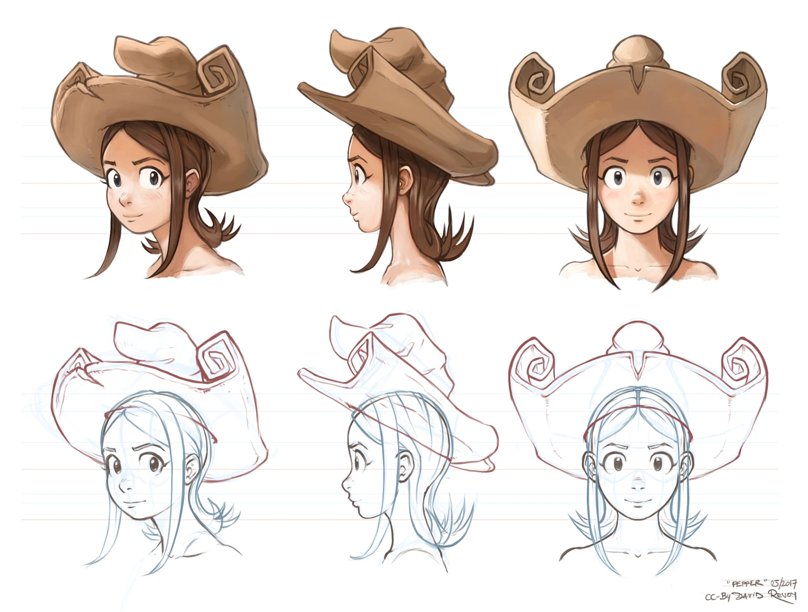

Не каждая сцена требует полного человека. Мешок с мукой, шар с хвостом или простая фигурка позволяют сосредоточиться на тяжести и намерении. Отсутствие пальцев и лица не мешает показать усталость, интерес и сопротивление. Более сложная анатомия добавляет возможностей и одновременно увеличивает количество вещей, которые нужно удержать согласованными.
Тайминг и расстояния между позами
Тайминг описывает, когда происходят события и сколько времени они занимают. Спейсинг описывает, как меняется положение между соседними моментами. Два персонажа могут добраться до кнопки за одну секунду, но один будет двигаться равномерно, а другой долго собираться и быстро бросит руку вперёд. Начало и конец совпадают, впечатление различается.

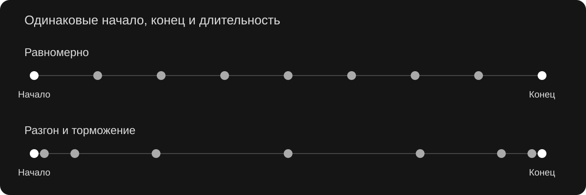
В анимации важна не только плавность. Почти равномерное движение подходит конвейеру, но человеческий жест часто содержит ускорение, торможение, остановку и корректировку. Пальцы могут чуть поправить захват после того, как ладонь уже встретила предмет. Голова может закончить поворот раньше плеч. Эти различия становятся видны, когда вы просматриваете сцену и в реальном времени, и покадрово.
Кадры и экспозиции. При 24 кадрах в секунду секунда содержит 24 временных позиции. Если каждый рисунок удерживается два кадра, получают до 12 разных рисунков за секунду. Это работа «на двойках». «На единицах» рисунок может меняться в каждом кадре. Частота воспроизведения при этом остаётся 24 fps. Двойки не означают, что весь проект надо экспортировать в 12 fps.
Выбор экспозиции зависит от скорости, стиля и движения камеры. Для быстрого прохода по экрану иногда нужны единицы, чтобы расстояние между видимыми положениями не стало слишком большим. В другом месте удержанная поза помогает прочитать мысль. В одной сцене возможны разные экспозиции у разных элементов. Автоматически уменьшить частоту готового плавного ролика недостаточно, чтобы получить выразительную рисованную анимацию.
Ключевая поза фиксирует важное состояние. Breakdown, или определяющая промежуточная поза, объясняет способ перехода. Рука может пройти к лицу по широкой дуге или прижаться к телу и подняться вдоль груди. Между одинаковыми ключами получатся разные жесты. Обычные промежуточные рисунки затем уточняют интервалы, но не должны случайно изобретать сам способ действия.
В компьютере ключом называют и запись значения свойства на таймлайне. Один технический ключ Position не равен законченной выразительной позе всего персонажа. Поэтому в обсуждении сцены полезно уточнять, идёт ли речь о постановке тела или о конкретной записи на кривой.
Экспозиционный лист, или X-sheet, записывает, какой рисунок или элемент виден на каждом кадре и где проходят звуковые события. Timing chart рядом с ключевым рисунком помогает распределить промежуточные положения: плотнее у остановки, свободнее при быстром движении. В цифровой программе часть этих задач выполняет таймлайн. Важно сохранять саму возможность связать номер кадра, рисунок, действие и звук.

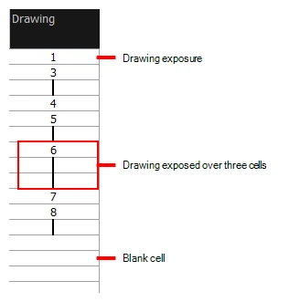

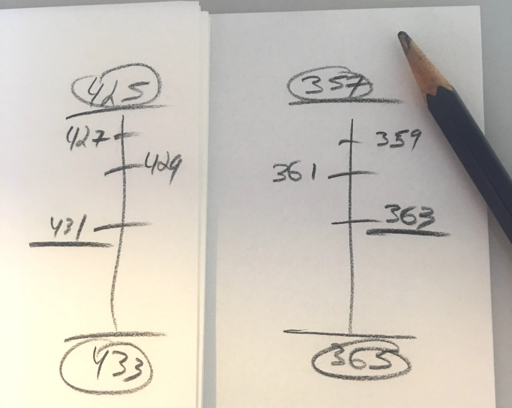
Пауза тоже анимируется. Полная неподвижность может работать как испуг или намеренная остановка. Moving hold удерживает смысл позы, позволяя очень небольшому изменению формы или массы продолжаться. Оно не обязано выглядеть как постоянное дыхание. Если зритель должен разглядеть продукт, лишнее покачивание персонажа рядом может оттянуть внимание.
В Graph Editor оценивайте связь кривой с изображением. Красивая S-образная кривая на каждом параметре не гарантирует хорошего жеста. Если сгладить все контакты одинаковым Ease, удар станет мягким, а стопа начнёт ездить. Кривая показывает один аспект движения, финальная проверка происходит в кадре.
Классические принципы в работе с героем
В лекции о двенадцати принципах мы рассматривали их отдельно. Здесь используем их совместно. Это словарь для анализа решения, а не требование включить двенадцать заметных эффектов в каждый жест. Сдержанный персонаж может двигаться очень экономно и оставаться убедительным.
| Принцип | Что он помогает решить | Пример в сцене с персонажем |
|---|---|---|
| Сжатие и растяжение | Показать упругость, нагрузку и смену формы. | Тело слегка собирается при приземлении. У жёсткого робота усилие передаётся суставами, а не размягчением металла. |
| Подготовка | Дать прочитать действие до его начала. | Перед броском герой переводит вес и отводит руку. Маленькая подготовка может быть только во взгляде. |
| Сценичность | Сделать главным именно нужное событие. | На момент реакции корпус и камера не закрывают лицо, соседние элементы не спорят за внимание. |
| Прямо вперёд и от позы к позе | Выбрать способ поиска движения. | Ключевые состояния подъёма коробки планируются заранее, дрожание ткани можно уточнять последовательно. |
| Захлёст и перекрывающееся движение | Разделить моменты старта и остановки частей. | Корпус остановился, мягкие уши продолжают движение и возвращаются. |
| Замедление в начале и конце | Управлять разгоном и остановкой. | Рука мягко приближается к хрупкой чашке, но резко отдёргивается от горячей поверхности. |
| Дуги | Сохранить понятную траекторию. | Кисть описывает дугу при махе. Неожиданная петля на траектории может выдать ошибку интерполяции. |
| Вторичное действие | Поддержать основное намерение. | Герой объясняет схему и поправляет очки в паузе. Жест не перекрывает ключевую информацию. |
| Тайминг | Задать тяжесть, ритм и характер реакции. | Раздумье длится дольше самого нажатия. Два героя реагируют с разной задержкой. |
| Преувеличение | Усилить существенное для чтения. | Наклон перед усилием становится заметнее, чем в бытовом видеореференсе. |
| Убедительная конструкция | Удержать объём, баланс и устройство формы. | При повороте голова не теряет массу, а ступня действительно принимает нагрузку. |
| Привлекательность образа | Сделать поведение ясным и интересным. | У героя есть узнаваемые пропорции, контрасты и манера действовать. Злодей тоже может обладать выразительностью. |
Сжатие не должно случайно уничтожать массу. При условно сохраняемом объёме уменьшение высоты сопровождается расширением, а растяжение сужением. Это художественная модель, не обязательный физический расчёт. Если голова и туловище независимо уменьшаются в каждом ударе, персонаж может начать выглядеть как меняющий размер объект.
Drag, overlap и follow-through удобно различать по наблюдаемому результату. Drag даёт отставание части от ведущей массы. Overlap разводит фазы движения разных частей. Follow-through позволяет движению продолжиться после основного события. Они могут встречаться вместе. Длинный хвост сначала отстаёт от поворота корпуса, затем проходит дальше остановившегося тела и постепенно успокаивается.
Преувеличение бывает пространственным и временным. Можно сделать позу шире, а можно почти не менять её, но дольше выдержать недоверчивый взгляд и резко выполнить следующую попытку. Во втором случае контраст создаёт тайминг. Постоянное усиление всех параметров лишает сцену акцентов.
Smear и быстрый переход помогают передать движение, для которого обычный промежуточный рисунок оказался бы слишком разборчивым. Форма может на мгновение вытянуться по направлению жеста или объединить несколько положений. Это намеренная краткая деформация. Если удержать её слишком долго, зритель прочитает поломку конструкции. В 3D подобную задачу решают специальной позой, деформацией, нарисованным элементом или сочетанием с размитием движения.
Вес, опора и механика тела
Вес виден через усилие и сопротивление. Сам предмет может выглядеть одинаково, пока персонаж не пытается его поднять. Лёгкая коробка поднимается небольшим жестом руки. Тяжёлая заставляет изменить стойку, приблизить груз к корпусу, напрячь тело и тратить время на разгон. Если рука поднимает огромный камень, а таз и стопы не реагируют, зритель не получает свидетельств нагрузки.
Центр массы в упрощённой человеческой модели часто отслеживают около таза, но его реальное положение меняется с позой и грузом. Площадь опоры образуют контакты с поверхностью. Для спокойной устойчивой стойки вертикальная проекция общего центра массы должна находиться в пределах опоры. В движении возможен выход за её границы: следующий шаг, импульс или другая опора не дают человеку упасть. Не переносите правило статической стойки буквально на бег.
При подъёме коробки руки сначала находят захват. Затем персонаж проверяет сопротивление, перестраивается и поднимает груз. Можно показать неудачную первую попытку, чтобы объяснить неожиданную тяжесть. При опускании движение тоже не обрывается: предмет встречает поверхность, руки разгружаются, корпус возвращается. Контакт завершает физическое действие, реакция завершает сцену.
Прыжок состоит не только из полёта. Есть подготовка, отталкивание, подъём, верхняя точка, снижение и приём веса. Во время обычного баллистического полёта вертикальная скорость меняется, у вершины она на мгновение равна нулю, а горизонтальное движение при отсутствии других воздействий может продолжаться. Поэтому вершина не означает полную остановку персонажа в пространстве.

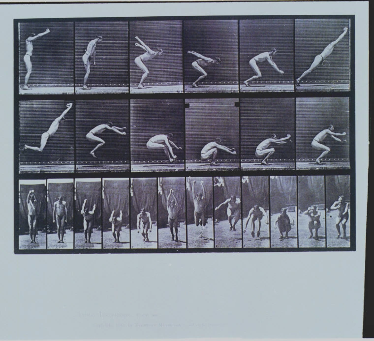

При приземлении стопы получают контакт, ноги сгибаются, корпус продолжает опускаться и затем возвращается. Для жёсткого робота амортизация может происходить в механических шарнирах. Для мягкого маскота добавляется деформация тела. Материал меняет форму реакции, но необходимость показать импульс и торможение сохраняется.
Контакты требуют отдельного прохода проверки. Опорная стопа должна сохранять положение относительно пола, пока персонаж не переносит её дальше. Кисть не должна проходить сквозь ручку двери, а чашка проскальзывать через пальцы. В 2D часть проблем решается рисунком и перекрытием, в 3D также помогают ограничения и смена пространства контроллера. Но автоматическая привязка не выбирает убедительную позу за аниматора.
Для персонажей с необычным строением выберите собственную логику. У существа без ног опорой может быть нижняя поверхность тела, у летающего робота работу выполняют двигатели. Зрителю достаточно последовательности причин: что создаёт движение, что ограничивает его и как герой останавливается. Правдоподобие не требует копировать человека буквально.
В подборке игровой анимации AnimSchool видны разные тела и типы действий. Остановитесь на одном коротком фрагменте с прыжком, атакой или сменой направления. Найдите опору перед усилием и момент, когда движение основной массы уже заканчивается, а остальные части ещё продолжают его. Это примеры готовых анимационных сцен, а не инструкция по настройке игрового движка.
Походка, бег и циклы
Походка объединяет баланс, ритм и характер. Ноги не просто по очереди качаются под неподвижным корпусом. Тело переносит вес, таз поднимается и опускается, опорная стопа работает с землёй, руки помогают общему движению. Степень этих изменений зависит от конструкции персонажа и выбранного стиля.
В учебном разборе удобно выделить контакт, нижнюю позицию, проходящую позицию и верхнюю позицию. Затем цикл продолжается с противоположной ногой. Контакт отмечает встречу шага с поверхностью. В нижней позиции тело принимает вес. В проходящей свободная нога проходит рядом с опорной. В верхней тело поднимается перед следующим контактом. Точные позы и моменты не обязаны быть одинаковыми для каждой походки.

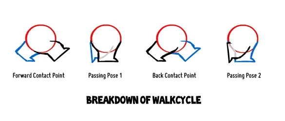

Шаг и цикл различаются. Один шаг приводит к контакту другой ноги. Полный повторяемый цикл обычно возвращает к той же фазе той же ноги и включает два шага. Если контакт левой ноги стоит на кадре 1, повтор той же позы можно поставить на кадре 25, а экспортировать кадры 1–24. Тогда одинаковое граничное состояние не проигрывается дважды. Это только удобный пример разметки, не обязательный темп любой ходьбы.
При работе «на месте» корпус остаётся примерно в одной области кадра, а пол условно проходит под персонажем. Во время фазы опоры стопа движется назад относительно корпуса. Когда весь персонаж дополнительно перемещается вперёд, эти скорости должны согласоваться. Иначе получится скольжение. В проходе по реальной сцене удобнее проверять стопы относительно неподвижных отметок на полу.
Начинайте с контактов и движения главной массы. Затем уточняйте таз, сгибы ног и стопы. После этого добавляйте грудную клетку, руки, голову и мягкие детали. Если сначала тщательно анимировать кисти, а потом менять длительность шага, значительную часть мелкой работы придётся переделать.
Характер походки появляется из связанных изменений. Торопливость может сочетать короткие опоры, наклон корпуса и быструю смену ног. Осторожность проявляется в проверке поверхности и задержке переноса веса. Усталость может уменьшить подъём свободной ноги и замедлить восстановление корпуса. Не сводите характер к одному ползунку скорости: ускоренная уставшая походка не обязательно станет бодрой.
Бег обычно включает фазу, когда обе стопы не касаются поверхности. В обычной ходьбе есть опора хотя бы на одну ногу и промежутки двойной опоры. У бега отличаются приём нагрузки, вынос ноги, наклон и длительность контакта. Простое ускорение ходьбы сохраняет другую механику, поэтому для убедительного бега нужны свои позы.
Циклу полезны начало и завершение. В сцене герой редко бесконечно шагает с одинаковым темпом: он решает идти, разгоняется, замечает цель и тормозит. Перед остановкой длина шага и положение корпуса меняются. Поворот на месте тоже требует перестановки опоры, если ступни не должны прокручиваться сквозь пол.
Для четырёхногих существ различают рисунок постановки конечностей и распределение нагрузки. Нельзя автоматически прикрепить к человеческому циклу ещё две ноги. Сначала выбирают конкретный аллюр и наблюдают последовательность контактов. Крылья, щупальца и плавники тоже требуют собственного анализа. Общими останутся ритм, опора или её аналог, направление усилия и выразительная задача.
Взгляд, мимика и речь
Взгляд организует внимание и даёт понять, что герой знает. Сначала он может заметить предмет глазами, затем повернуть голову и корпус. Но это не обязательный порядок на все случаи: при неожиданном звуке первым может резко развернуться всё тело, а глаза уточнят цель позже. Важна связь с причиной и состоянием персонажа.
Линия взгляда должна попадать в нужный объект. В 3D глаза могут смотреть правильно сбоку и расходиться из камеры сцены. В 2D направление уточняется положением радужки, поворотом головы и формой век. Если герой переводит внимание между партнёрами, отметьте положения целей, иначе маленькие ошибки дадут ощущение рассеянного взгляда.
Выражение складывается из нескольких зон. Брови задают напряжение и отношение, веки меняют открытость взгляда, щёки и уголки рта участвуют в улыбке, наклон головы поддерживает или осложняет выражение. Одинаковая улыбка может казаться радостной, вынужденной или настороженной в зависимости от корпуса и глаз.

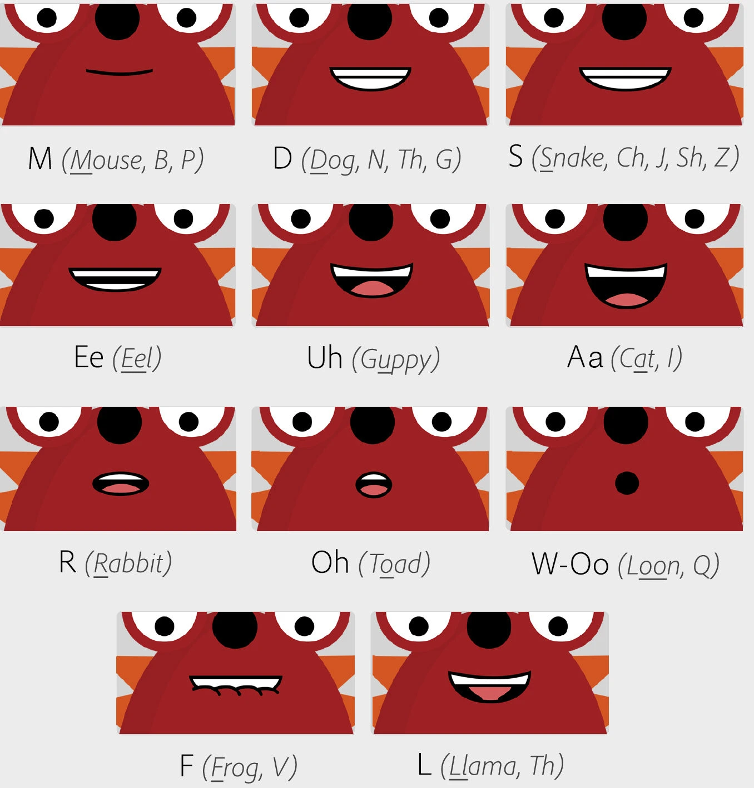
Асимметрия помогает конкретизировать эмоцию. Но случайно смещённая половина лица не становится характером сама по себе. Сначала выберите ясную общую форму, затем добавьте различия. При переходе от удивления к подозрению полезно показать изменение мысли, а не просто одновременно заменить комплект бровей и рта.
Моргание может сопровождать перевод внимания, смену мысли или физическое усилие. Постоянный одинаковый интервал выглядит автоматикой. Иногда герой долго не моргает, потому что сосредоточен. Само закрытие и открытие век может иметь разную длительность. Для стилизованной сцены достаточно нескольких точных морганий вместо непрерывной активности лица.
Липсинк связывает видимые формы рта со звучащей речью. Визема объединяет звуки, которые похожи по положению губ. Для закрытия на «м», «б», «п» нужен контакт губ; для «ф» и «в» важна связь нижней губы с верхними зубами. Не требуется делать отдельную уникальную картинку для каждой буквы. Смотрите на произношение, ударение и соседние звуки.
Сначала выберите эмоциональное действие реплики и расставьте основные жесты. Затем определите опорные формы рта, добавьте переходы и проверьте синхронизацию на нормальной скорости. Челюсть, губы и язык не обязаны двигаться одновременно. Иногда форму подготавливают немного раньше слышимого события, но универсальный сдвиг на фиксированное число кадров для всех реплик не работает.
Герой не обязан жестикулировать на каждом слове. Один точный жест на смысловом ударении бывает убедительнее постоянных взмахов. Дайте зрителю увидеть момент понимания и реакцию после реплики. В разговоре важны паузы слушающего, перебивание, попытка возразить и отказ от неё. Именно в этих переходах часто появляется характер.
Если автоматический липсинк уже построен, рассматривайте его как черновик. Проверьте закрытия губ, паузы, чрезмерное число смен и соответствие эмоции. Технически правильное совпадение звуков с формами может всё ещё выглядеть как механический рот на неподвижном лице.
От замысла до законченной сцены
Производственный процесс нужен, чтобы сначала решить дорогие по смыслу вопросы, а затем уточнять детали. Для пятисекундного маскота и длинного эпизода этапы могут быть разного масштаба, но ранняя проверка действия экономит время в обоих случаях.
Аниматик позволяет проверить кадрирование и длительность до сложного рига. Это могут быть грубые рисунки с временным звуком. Если непонятно, почему герой остановился, аккуратная покраска проблему не решит. На этом этапе проще переставить паузу, приблизить камеру или убрать лишнее действие.
Сравните раскадровку и ранние последовательности в галерее Spring от Blender Studio. В ранней версии полезно следить за длительностью планов, направлением взгляда и местом персонажа в кадре.
Blocking фиксирует ключевые состояния. В компьютерной анимации их часто сначала смотрят с удержанием поз без плавной интерполяции, чтобы оценить постановку и ритм. В рисованной сцене похожую роль выполняет черновой pencil test. Зрителю уже должно быть понятно, где подготовка, что произошло и как герой отреагировал.
После добавления плавных переходов часто обнаруживается «плавание». Программа интерполирует параметры по отдельности, но не знает, что стопа должна оставаться опорой, а локоть проходить по выбранной дуге. Уточняйте определяющие промежуточные позы, сдвигайте фазы и проверяйте путь кисти, головы и таза. Цель этого прохода состоит в сохранении действия между ключами.
Polish касается уже работающей сцены. Здесь исправляют небольшие провалы в траекториях, неуместные симметрии, контакты, дрожание и случайные остановки. Волосы, ткань и другие детали добавляют после основного тела, иначе они могут скрыть ошибку и затруднить правку.
Удобно просматривать сцену несколькими способами: в нормальном темпе, без звука, с простыми материалами и в уменьшенном размере. Каждый просмотр отвечает на свой вопрос. Без звука заметнее понятность действия. Простой силуэт обнаруживает перекрытия. Реальный темп показывает, успевает ли читаться мысль. Покадровый разбор полезен для контактов, но по нему одному нельзя судить о ритме.
Между планами сохраняйте направление действия, положение рук на предмете и эмоциональное состояние. Если в одном кадре чашку держит правая рука, в следующем её внезапная смена должна быть объяснена. Склейка может опустить часть движения, но она не отменяет причинную связь. Камера выбирается вместе с действием: красивый ракурс, закрывающий ключевой жест, мешает сцене.
Способы создания 2D-анимации
Двумерный персонаж не обязательно перерисовывается целиком в каждом кадре. Возможны покадровый рисунок, перекладка, деформация изображения, замены отдельных видов, захват исполнения и гибридные способы. Выбор определяется не модой на инструмент, а тем, какие изменения формы и ракурса нужны в конкретной сцене.
| Подход | Как получается движение | Сильная сторона и ограничение |
|---|---|---|
| Покадровый рисунок | Автор рисует ключи, определяющие переходы и промежуточные изображения. | Свобода формы, ракурсов и стилизации. Нужно удерживать конструкцию, объём и чистоту рисунка. |
| Перекладка | Части персонажа вращаются и перемещаются вокруг подготовленных суставов. | Повторное использование для серий. Для сильного поворота могут понадобиться новые виды частей. |
| Сеточная деформация | Кости, точки или деформаторы меняют сетку поверх иллюстрации. | Мягкие изгибы и локальная пластика. Избыточная деформация растягивает рисунок. |
| Замены и морфинг | Меняются рисунки рта, кистей и ракурсов либо управляемая форма контура. | Точные выражения и сложные локальные переходы. Нужно согласовать смену состояния с движением. |
| Ротоскопия | Отснятое действие служит покадровой основой для рисунка. | Поддержка сложной механики. Простая обводка не гарантирует ясности и выразительности. |
| Захват исполнения | Камера, микрофон и управляющие сигналы двигают подготовленную куклу. | Быстрая запись и живое выступление. Качество зависит от рига, исполнения и последующей правки. |
| Гибрид | Риг работает для корпуса, рисунок для поворотов, кистей, эффектов и сложных акцентов. | Можно соединить повторяемость и свободу. Требуются общий стиль и согласованная экспозиция. |
Покадровая работа обычно проходит через rough animation, проверку движения, clean-up и цвет. Rough решает действие, clean-up уточняет форму и линию. Onion skin показывает соседние рисунки, но не выбирает правильный промежуточный силуэт. В цифровой среде можно копировать и трансформировать части изображения, однако итог всё равно проверяется как последовательность поз. Для такого процесса используют, например, Toon Boom Harmony, TVPaint, Krita, Clip Studio Paint и Blender Grease Pencil. Конкретные ограничения таймлайна и экспорта зависят от программы и редакции.
Посмотрите на примеры Onion Skin в Krita. Цветные соседние рисунки помогают заметить, насколько сильно сместился контур между текущим и следующим кадрами.

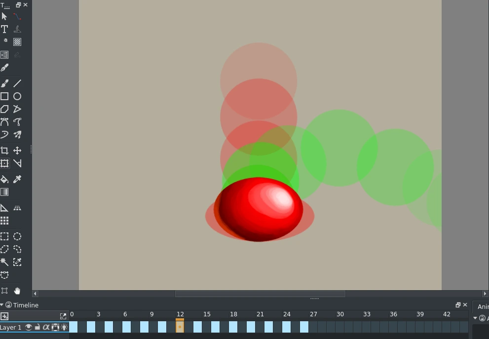
Риг представляет собой систему управления. Он может включать иерархию частей, кости, деформаторы, ограничения, контроллеры и переключатели видов. Риггинг создаёт возможность поставить позу; анимация выбирает сами позы и время. Автоматический цикл походки полезен как исходная заготовка, но не определяет намерение персонажа в сцене.
Для перекладки иллюстрацию готовят слоями: отдельно голова, корпус, плечи, предплечья, кисти, бёдра, голени и стопы. У суставов делают достаточное перекрытие, чтобы сгиб не открыл дырку. Точки вращения ставят в осмысленные места. Если рука должна оказаться за корпусом, заранее нужен подходящий порядок слоёв или переключение. Для разворота головы могут потребоваться дополнительные рисунки вместо попытки растянуть один фронтальный вид.
В After Effects простая перекладка возможна через Anchor Point, Parent & Link и нулевые объекты. Для мягкой формы есть Puppet: он деформирует сетку слоя с помощью управляющих точек. Это не то же самое, что полноценный скелет с удобными контроллерами и ограничениями. Несколько случайных Puppet Pins могут заставить рисунок изгибаться, но при сильных позах потребуется продуманная система и проверка формы.
Для первого теста возьмите один жест, например взмах рукой. Поставьте одинаковые начальную и конечную позы в двух вариантах и сравните, как Puppet сгибает цельный рисунок и как перекладка поворачивает отдельные детали.
Как выбрать инструмент для 2D-рига
Puppet Tool в After Effects. Подходит для мягкой деформации цельной иллюстрации, например для хвоста или руки, нарисованной вместе с корпусом. Поставьте удерживающие пины у опоры, управляющий пин на конце и проверьте сгиб между двумя позами. В руководстве Adobe показаны сетка, установка пинов и результат их перемещения. Урок Adobe по Puppet Tool.

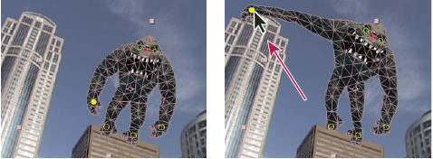
Duik Ángela. Подходит для персонажа, которому нужна система костей и контроллеров. На раздельных слоях плеча, предплечья и кисти проверьте, где проходит локоть и как рука реагирует, когда кисть ведут контроллером IK. Затем испытайте крайние позы и только после этого собирайте цикл.
Rubberhose 3. Подходит для гибких рук и ног, у которых важна форма дуги. Попробуйте переместить конечные контроллеры и сравнить мягкий изгиб с более выраженным локтем. В уроках разработчика есть отдельные примеры для векторных линий и растровых слоёв. Видеоуроки Battle Axe.
Перекладка средствами AE. Если нужно, чтобы рука оставалась жёсткой в плече и предплечье, достаточно двух слоёв с точками вращения на суставах и связью через Parent & Link. Такой вариант удобно сравнить с Puppet на том же жесте: в одном случае работает поворот частей, в другом изгибается сетка.
Duik расширяет возможности риггинга и анимации в AE. Вводный урок автора показывает путь от арматуры до управления персонажем и цикла. Сначала посмотрите структуру управления, затем обратите внимание, какие решения о позе всё равно принимает аниматор. Руководство Duik Ángela.
Прямое и обратное управление. При FK поворот плеча увлекает предплечье и кисть, затем отдельные повороты уточняют жест. При IK положение конечной цели, например кисти, помогает вычислить сгиб цепочки. IK удобно, когда ладонь должна держаться за стол или стопа оставаться на полу. FK часто удобно для свободного маха. Это разные способы управления одной задачей, а не «плохой» и «хороший» риг.

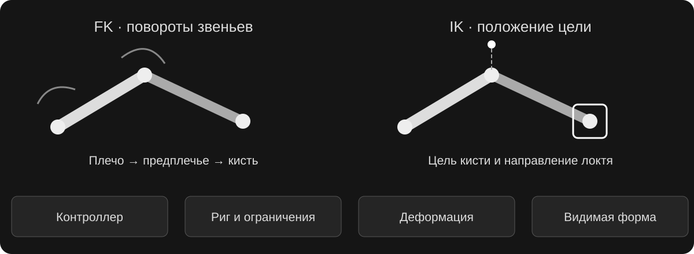
При смене IK и FK важно совпадение текущей позы, иначе конечность скачет. Для IK обычно нужен способ задать сторону сгиба локтя или колена, например pole target. Иначе при перемещении цели сустав может неожиданно перевернуться. В 2D конкретная реализация зависит от инструмента, но проблема направления сгиба остаётся той же.
Spine, Moho и Live2D Cubism решают связанные, но разные производственные задачи. Spine часто выбирают для скелетных 2D-персонажей, которые затем работают в игре. Moho сочетает кости и деформацию в среде создания анимации. Live2D строит управляемые деформации подготовленной иллюстрации и часто используется для экранных аватаров. Перед выбором проверьте нужный формат доставки: обычное видео и персонаж, которым управляет приложение, требуют разных экспортов и иногда отдельных условий лицензии.
В руководстве Spine показано, как веса связывают вершины рисунка с костями. В руководстве Live2D можно сравнить деформаторы вращения и изменения формы. Эти примеры помогают увидеть разницу между простым перемещением цельной картинки и изменением её внутренней сетки.
Character Animator позволяет записывать исполнение куклы с использованием камеры, голоса и триггеров. Подготовленные формы рта, руки и выражения включаются по сигналам. Такой подход уместен для ведущего, объясняющего персонажа или эфира. Он не освобождает от постановки: жесты, положение в кадре и эмоциональную задачу всё равно нужно выбрать. Официальная подборка Adobe.
Предметная и кукольная stop-motion анимация строится иначе технически: физическую куклу меняют между фотографиями. Для моушн-дизайна так могут двигаться бумажные герои, объёмные маскоты и материалы. Нужно следить за устойчивостью, светом, фиксацией камеры и минимальными смещениями. При этом подготовка, вес, дуги и тайминг нужны так же, как цифровому персонажу. Формально это отдельная техника производства, а не разновидность компьютерного 2D-рига.
Персонаж в 3D
В 3D появляется объёмная модель, которую можно рассматривать с разных сторон. Но модель не играет роль автоматически. Аниматор по-прежнему выбирает силуэт, действие, паузы, опору и реакцию. Возможность повернуть камеру не заменяет удачный ракурс, а плавная интерполяция не заменяет убедительный переход между позами.
«История игрушек» особенно наглядно показывает общность принципов. Базз и Вуди существуют как объёмные персонажи, но их поведение читается через подготовку, контраст поз, дуги, тайминг и реакции. Материал влияет на пластику: жёсткий скафандр и мягкая кукольная фигура допускают разные способы выразить усилие. Это не требование одинаково растягивать всех героев. Страница фильма Pixar.
При повторном просмотре отделите три слоя. Сначала посмотрите только на позы: направление корпуса, раскрытие рук, отношения головы и плеч. Затем на ритм: где действие подготавливается, где ускоряется и где возникает пауза. В третий раз следите за реакцией: уверенность одного героя и сомнение другого создают сцену вместе. Это учебный разбор видимого результата, не описание внутреннего рига Pixar.
Классические принципы в 3D не копируются как набор деформаторов. Solid drawing превращается в заботу о конструкции, объёме и читаемости позы. Дуги проверяются через экранные траектории, а overlap через сдвиг движения отдельных частей. Appeal зависит от дизайна и постановки так же, как в рисунке. Даже если сетка анатомически безупречна, слабый силуэт и одинаковый тайминг всех суставов могут сделать персонажа невыразительным.
Модель, скелет, скиннинг и контроллеры выполняют разные роли. Модель является видимой поверхностью. Скелет задаёт структуру суставов. Скиннинг описывает, как движение костей деформирует вершины. Контроллеры дают аниматору удобный доступ к нужным действиям. Кость может участвовать только в управлении, а не непосредственно деформировать поверхность. Сложный риг также содержит ограничения, переключения пространств и корректирующие формы.
При скиннинге веса определяют вклад костей в положение вершин. Слишком широкое влияние локтя может потянуть грудь, неудачное распределение на плече смять объём. Автоматические веса полезны как начало, но их проверяют в согнутых, поднятых и скрученных позах. Топология вокруг суставов тоже влияет на деформацию. Красивой модели в нейтральной стойке недостаточно, если она теряет форму при первом движении.
Shape keys и blend shapes хранят изменения формы, например улыбку, закрытие века или коррекцию плеча. Их можно смешивать и связывать с контроллерами. Они не обязательно заменяют кости: лицо и тело часто используют несколько механизмов вместе. На этапе анимации важно понимать, какой контроллер уже влияет на нужную область, чтобы не складывать одинаковое изменение дважды.
Работа в Blender может начинаться с готового учебного рига. Так проще изучать анимацию отдельно от моделирования. Сначала проверьте, какие контроллеры двигают всего героя, таз, корпус, кисти и стопы, где переключаются IK/FK и как восстанавливается поза. Затем выберите камеру сцены, поставьте ключи в Pose Mode и смотрите черновой проход без дорогого финального рендера. Dope Sheet помогает работать с моментами ключей, Graph Editor с изменением значений между ними.
Не нужно строить собственный сложный риг, чтобы начать наблюдать вес и характер. В Animation Fundamentals от Blender Studio движение изучается от простых объектов к персонажным действиям. Уроки и загрузки могут иметь разные условия доступа. Для отдельного изучения устройства управления есть Rigging Fundamentals. Выбирайте задачу: постановка сцены и создание инструмента для неё требуют разных проходов работы.
Ручная анимация по ключам даёт контроль над актёрской постановкой. При pose-to-pose сначала определяют важные состояния, затем переходы, затем детали. При straight ahead движение ищут последовательно. Эти способы могут сочетаться: основной жест планируется, а свободные колебания или импровизированная реакция уточняются по ходу.
Motion capture записывает исполнение человека с помощью камер, датчиков или анализа видео. Данные нужно перенести на скелет персонажа, этот процесс называют ретаргетингом. Разные пропорции могут дать скольжение стоп, неверный контакт рук и другую высоту таза. После переноса проверяют опоры, направление взгляда, взаимодействие с предметами и силуэт. Захват движения не равен захвату законченной драматургии.
Библиотечные клипы удобны для прототипа и массовки. Для главного героя часто приходится менять акценты, длину шага, контакты и переходы. Проверьте условия использования конкретной библиотеки, совместимость скелета и возможность редактировать результат. Полезный исходник сохраняет время, но его наличие не доказывает, что герой уже действует в характере вашей истории.
Процедуры и симуляция могут управлять дополнительными движениями: взглядом на цель, постановкой стоп на неровную поверхность, пружинящим хвостом или тканью. Результат оценивается в контексте. Реалистичное колебание одежды может закрыть лицо в важной реакции, тогда его ограничивают или исправляют. В игровой анимации добавляются состояния, смешивание клипов и реакции на управление. В кино сцену можно точнее поставить под выбранную камеру.
Генеративные инструменты и анимация из видео тоже могут давать заготовку движения или готовый фрагмент. Различайте редактируемое движение скелета и сгенерированную последовательность пикселей. В первом случае можно отдельно править опору и руку, во втором такая локальная правка может потребовать нового прохода. Для повторяющегося маскота особенно важны неизменность конструкции, контакты и возможность воспроизвести позу.
В Spring удобно сравнить готовый результат и производственные материалы. В самой сцене персонаж действует как единое целое, а в breakdown видны отдельные стадии. Не путайте анимацию героя с финальным светом, волосами и эффектами: они усиливают решение, которое должно быть читаемо и в простом просмотре.
Выбор подхода для проекта
Для разовой выразительной трансформации может оказаться удобнее рисунок. Для серии объясняющих роликов с одним героем окупается подготовка 2D-рига. Для объёмного героя, разных камер и взаимодействия со сценой полезен 3D. Для эфира или интерактивного аватара важна возможность управлять персонажем в реальном времени. Гибрид подходит, когда преимущества нужны одновременно.
| Задача | Возможный подход | Что проверить заранее |
|---|---|---|
| Маскот в короткой заставке | Рисунок, шейпы или простой риг в AE | Силуэт, один ясный жест, читаемость в маленьком размере. |
| Серия роликов с ведущим | 2D-риг, формы рта и библиотека жестов | Нужные ракурсы, диапазон эмоций, смена рук и порядок слоёв. |
| Пластичная авторская сцена | Покадровый рисунок либо гибрид | Деформации, количество уникальных рисунков и время на clean-up. |
| Герой рядом с объёмным продуктом | 3D-риг и ключевая анимация | Контакты с продуктом, масштаб, деформация и время рендера. |
| Игровой или интерактивный герой | Скелетная анимация и система состояний | Переходы, задержка реакции, циклы и ограничения платформы. |
| Живое выступление персонажа | Подготовленная кукла и захват исполнения | Калибровка, триггеры, паузы и поведение при потере сигнала. |
До подробного риггинга полезно проверить самые трудные действия. Если герой должен повернуться, сесть и поднять предмет, протестируйте именно их, а не только мах рукой в нейтральной стойке. Для 2D это выявит нехватку рисунков и проблемы перекрытий, для 3D ограничения деформации, для захвата исполнения неудобные контроллеры.
При оценке сцены возвращайтесь к простым вопросам. Понятно ли, чего герой хочет? Видно ли, где находится его вес? Есть ли причина для паузы и изменения темпа? Удерживаются ли контакты? Поддерживают ли лицо и жест одну мысль? Эти вопросы одинаково полезны для нарисованного кота, куклы в After Effects и объёмного героя «Истории игрушек».
Для дальнейшего разбора пригодятся материалы Toon Boom о производственных подходах, руководство Duik, уроки Character Animator и Animation Fundamentals от Blender Studio. Сначала выбирайте действие, которое хотите поставить, затем материал, который помогает решить именно эту задачу.